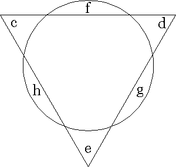

To investigate the triangulature of the circle, where the circle contains as much as the triangle and
the triangle as much as the circle, we must first consider that a right angle belonging to a square
has more containing capacity than an acute angle belonging to a triangle, and this is why longer
lines and measures are attributed to the triangle than to the square, given that a triangle cannot
contain as much surface as a square when the length of lines is the same for each figure.
Therefore, since the triangle needs longer lines than does the square, we should consider that the
capacity of the square is halfway between the capacity of the circle and triangle, just as circle
e.f.g.h. stands halfway between the major and minor squares; now let us look for the
measurements we want in order to draw a triangle with which the circle is triangulated. Here is how
we take these measurements.
From the minor square in the master figure, take one of the diametrical lines which participates
with two angles in touching the circle, and from 4 diametrical lines equal to this diametrical line,
make one straight line a.b., divide it into three equal lines, and from all three make an equilateral
triangle, then put one foot of the compass in the center of the triangle, and with the other one, draw
a circle equal to circle e.f.g.h.; now the circle is triangulated in this triangle, because the triangle's
c.d.e. are equivalent to the circle's f.g.h., as the eye can see.
It was said that the capacity of the square is halfway between the capacities of the circle and
triangle, and since square r.s.t.v. is made of 4 lines as we said, and the triangle is made of 4
diametrical lines, and since the square's capacity is halfway between those of the circle and the
triangle, line x.y. must be worth a half line more than the line of circle r.s.t.v. and a half line less
than line a.b. which encloses the triangle in which the circle is equally triangulated, and so the
square's capacity stands halfway between the triangle and the circle by one line composed of two
equal halves: the square's line is greater than the mentally extended circular line by one half, and
smaller than line a.b. by the other half. Therefore it is proved that these are the right and necessary
measurements for triangulating the circle; indeed, if there were more or less of them, the square's
capacity could not be halfway between the capacities of the circle and the triangle.